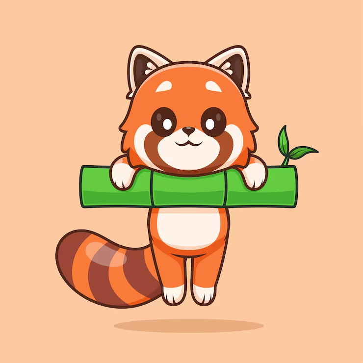

03:33
MISSING🧅 НЕ КОРМИТЬ ПОСЛЕ ПОЛУНОЧИ
КЛЮЧ ПОД БУМАГАМИ.
0{{n}} ⚿ {{n===2?'лук нахер':'пусто'}} {{k===1?'ДОС / 1987':k===2?'НЕ СМОТРИ НАЗАД':'ИНВЕНТАРЬ'}}
00:{{String(Math.ceil(nightRemaining)).padStart(2,'0')}}
{{nightPhase==='dark'?'Они стоят у дверей.':'Свеча зажглась. Найди ключ.'}} {{nightPhase==='dark'?'Води мышью или пальцем — это твой фонарик.':'Открой ящики, убери бумаги и забери маленький ключ.'}}
{{nightPhase==='dark'?'Свет вернётся через 10 секунд. Не отворачивайся.':'Ключ затерялся под бумагами. Нажимай на стопку, чтобы разобрать её.'}}
02 / ТАМ, ГДЕ ТЕПЛО
Привет, ты выбрался. Оставь темноту за дверью. Здесь тебя ждал ужин.
Ирка. Главный герой. Накормит всех.
{{photo?'Заменить фото':'Добавить фото'}} {{photoError}}
РЕЦЕПТ № 025 Борщ, который Нажми на тарелку — D.Va поможет с овощами ↗
СЕКРЕТНЫЙ ИНГРЕДИЕНТ Щепотка смелости. 25 свежих овощей.
🧅 СДЕЛАНО
дос
03 / ИРКА × D.VA / НА КУХНЕ
Ирка — в режиме MEKA. {{score}}/ 25
{{'♥ '.repeat(lives)}}{{'♡ '.repeat(3-lives)}} ВОЛНА {{Math.min(3,1+Math.floor(score/8))}} МЕХА
{{lives===0?'МИССИЯ ПРЕРВАНА':'ПИЛОТ ГОТОВ'}} {{lives===0?'Болты — не приправа.':'Ирка, пробел — и погнали.'}} Лови овощи и обходи болты. Каждые 8 овощей темп растёт.
{{lives===0?'Повторить — пробел':'Начать — пробел'}} ↗ ← Мышь / палец / A D / ← →
⇧ МЕХА → 04 / МАЛЕНЬКОЕ СПАСЕНИЕ
Я тебя не оставлю. Герой с твоей фотографии отправляется за пандой.
{{mazeState==='lost'?'Лук оказался быстрее.':'Ещё один шаг к дому.'}} {{mazeState==='lost'?'Попробуй отвлечь преследователя и добраться до снежинки.':'Панда с тобой. Следующий путь будет сложнее.'}}
{{mazeState==='lost'?'Попробовать снова':'Продолжить'}} ↗ 05 / ДОПРОС У ТРЁХ ДВЕРЕЙ
ВОПРОС 0{{doorIndex+1}} / 03
Три двери. Один правильный ответ. У каждой двери свой ответ. Угадаешь — откроется следующий проход.
✦ ✧ ✳ ✦ ✧ ✳
СЕКРЕТНЫЙ ВОПРОС #0{{doorIndex+1}} {{doorQuestion.title}} {{doorQuestion.hint}}
{{doorChoice===i&&doorPhase==='correct'?'♡':doorChoice===i&&doorPhase==='wrong'?'✕':'✦'}} 0{{i+1}} ✧ IRKA / VIP {{option}}
✧ Нажми на дверь с правильным ответом ⟡ Секундочку, дверь открывается… ✦ {{doorQuestion.success}} ✕ {{doorQuestion.fail}}
{{doorIndex===2?'В антизапорный тир ↗':'Следующая дверь ↗'}} Попробовать другую дверь ↻
06 / ОПЕРАЦИЯ «СВОБОДА»
Помоги запору уйти! В туалете бунт. Стреляй по какахам из водяного бластера, чтобы освободить выход.
ОСВОБОЖДЕНО {{poopScore}} / 15
💧 WATER BLASTER / IRKA EDITION КОМБО ×{{poopCombo||1}}
{{poopState==='won'?'✨':'💧'}}
{{poopState==='won'?'МИССИЯ ВЫПОЛНЕНА':'ТОЛЬКО ВОДА. ТОЛЬКО ХАРДКОР.'}} {{poopState==='won'?'ЗАПОР ПОБЕЖДЁН!':'Время водяной атаки.'}} {{poopState==='won'?'15 из 15! Все какахи отправились на свободу. Ирка, ты легенда.':'Целься по прыгающим какахам и нажимай мышью или пальцем. Нужно попасть 15 раз.'}}
Начать стрелять ↗ Освободить путь домой ↗ ЭПИЛОГ / БОЛЬШЕ НЕ СТРАШНО
{{lantern?'Молодец, Ирка, что прошла это всё !!!!!':'Оставь свет для друга.'}} {{lantern?'Ты невероятно скилловая: ночь пережита, борщ готов, панда спасена, три двери пройдены, запор побеждён. Лук отправлен нахер. ДОС.':'Нажми на фонарь. Пусть эта ночь закончится теплом.'}}
✧ 
♡ {{lantern?'ДВОЕ ДОБРАЛИСЬ ДО ДОМА.':'ОНА БОЛЬШЕ НЕ ОДНА.'}}
🏆 IRKA — MVP Это проходят 0% людей. По абсолютно ненаучной статистике лука ♡ Пасхалки: {{eggs.length}} / 3 · Ранг: красная панда Y2K
Пройти ещё раз ↻